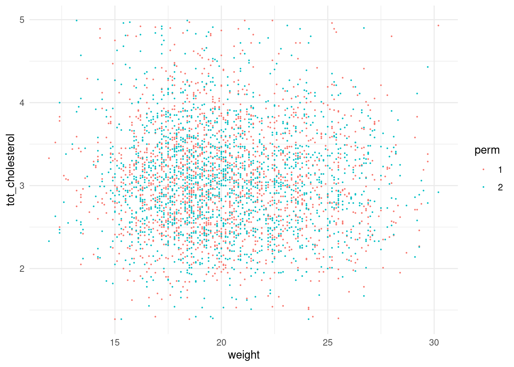
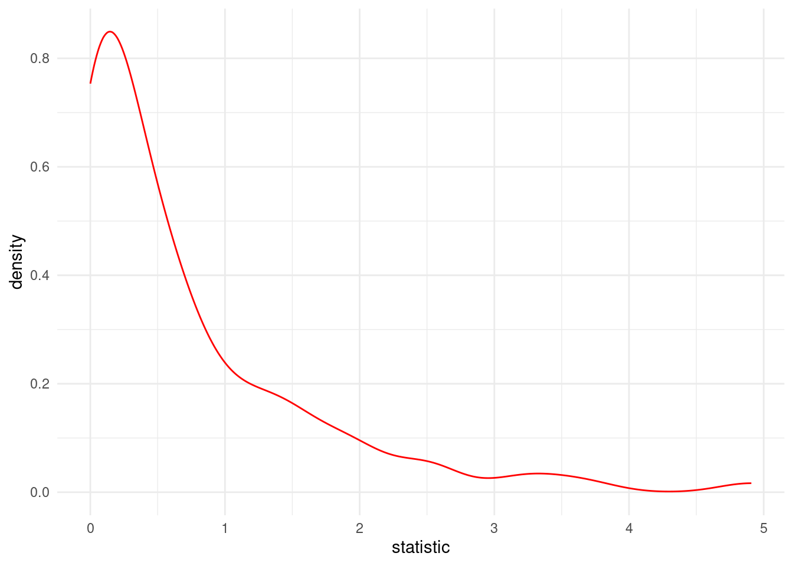
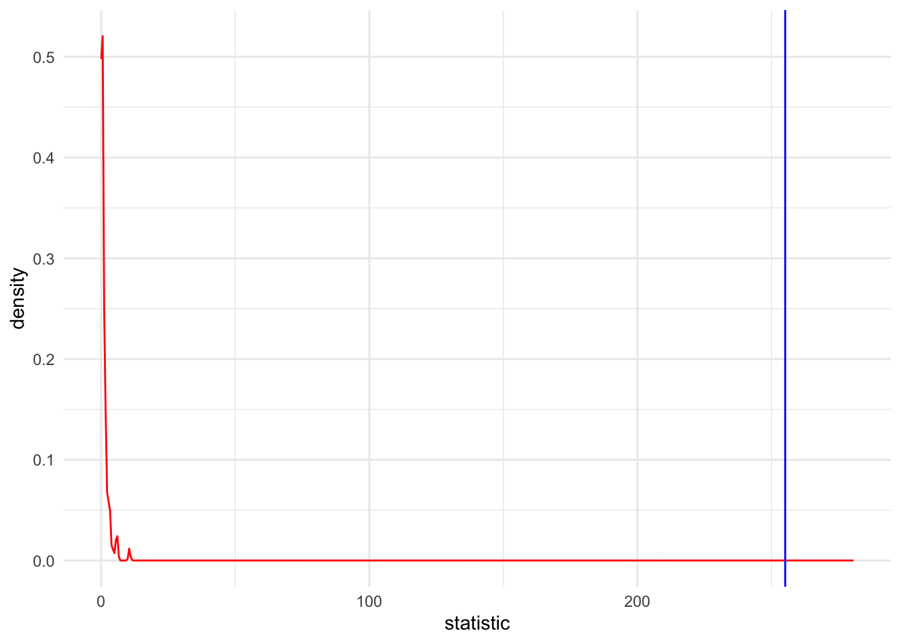
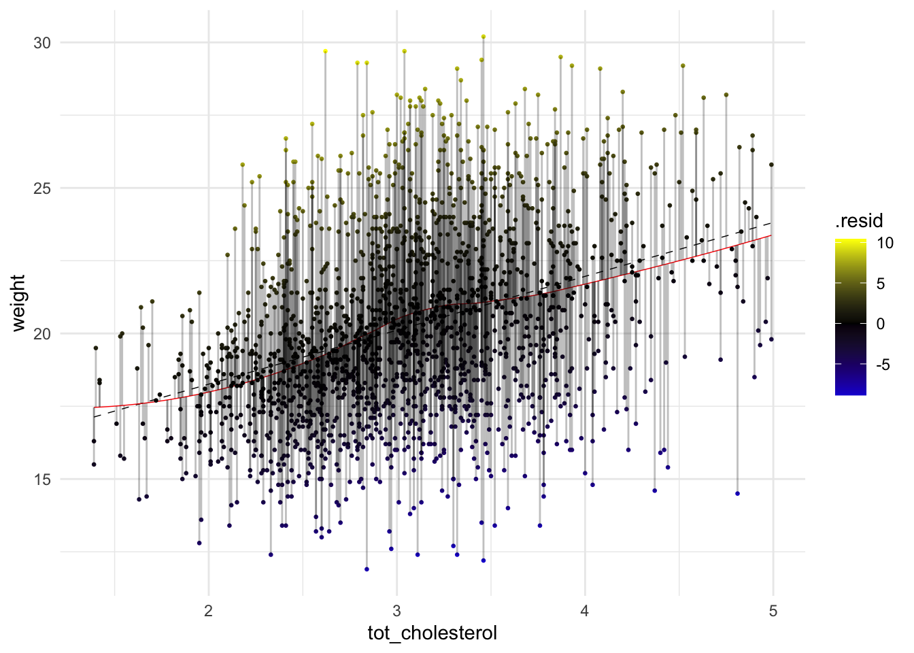

| Info | Parametric | Non-Parametric |
|---|---|---|
| better descriptor | mean | median |
| # of samples (N) | many | few |
Bootcamp: Stats class 3
Learning Objectives
- Visualize and Summarize the data being compared
- Formulate and Execute null hypothesis testing
- Identify and Perform the proper statistical test for data type/comparison
- Calculate and Interpret p-values
- Prevent p-hacking and Recognize issues with simultaneously testing multiple hypotheses.
Outline
- Concepts and Definitions
- Simplifying principles: Common tests as linear models
- Types of comparisons and statistical tests
- Definitions
- Day 1: Relationship between two or more continuous variables
- Correlation vs Regression
- Fitting it a line to data
- Linear regression concepts
- Multiple regression
- Day 2: Relationship between categorical and continuous variables
Comparing means between two groups (t-Test)
Comparing means between 3 or more groups (ANOVA)
- Day 3: Multiple test correction, Bayesian intro, History
Provide a simple and flexible framework

CHEATSHEET

Variables definitions
Random variables (x, y)
Response Variable ( y - aka dependent or outcome variable): this variable is predicted or its variation is explained by the explanatory variable. In an experiment, this is the outcome that is measured following manipulation of the explanatory variable.
Explanatory Variable ( x - aka independent or predictor variable): explains variations in the response variable. In an experiment, it is manipulated by the researcher.
Quantitative Variables
Discrete variable: numeric variables that have a countable number of values between any two values - integer in R (e.g., number of mice, read counts).
Continuous variable: numeric variables that have an infinite number of values between any two values - numeric in R (e.g., normalized expression values, fluorescent intensity).
Categorical Variables
Nominal variable: (unordered) random variables have categories where order doesn’t matter - factor in R (e.g., country, type of gene, genotype).
Ordinal variable: (ordered) random variables have ordered categories - order of levels in R ( e.g. grade of tumor).
Hypothesis testing definitions
Hypothesis testing is a statistical analysis that uses sample data to assess two mutually exclusive theories about the properties of a population. Statisticians call these theories the null hypothesis and the alternative hypothesis. A hypothesis test assesses your sample statistic and factors in an estimate of the sample error to determine which hypothesis the data support.
When you can reject the null hypothesis, the results are statistically significant, and your data support the theory that an effect exists at the population level.
A legal analogy: Guilty or not guilty?
The statistical concept of ‘significant’ vs. ‘not significant’ can be understood by comparing to the legal concept of ‘guilty’ vs. ‘not guilty’.
In the American legal system (and much of the world) a criminal defendant is presumed innocent until proven guilty. If the evidence proves the defendant guilty beyond a reasonable doubt, the verdict is ‘guilty’. Otherwise the verdict is ‘not guilty’. In some countries, this verdict is ‘not proven’, which is a better description. A ‘not guilty’ verdict does not mean the judge or jury concluded that the defendant is innocent -- it just means that the evidence was not strong enough to persuade the judge or jury that the defendant was guilty.
In statistical hypothesis testing, you start with the null hypothesis (usually that there is no difference between groups). If the evidence produces a small enough P value, you reject that null hypothesis, and conclude that the difference is real. If the P value is higher than your threshold (usually 0.05), you don’t reject the null hypothesis. This doesn’t mean the evidence convinced you that the treatment had no effect, only that the evidence was not persuasive enough to convince you that there is an effect.
Effect — the difference between the population value and the null hypothesis value. The effect is also known as population effect or the difference. Typically, you do not know the size of the actual effect. However, you can use a hypothesis test to help you determine whether an effect exists and to estimate its size.
Null Hypothesis or \(\mathcal{H}_0\) — one of two mutually exclusive theories about the properties of the population in hypothesis testing. Typically, the null hypothesis states that there is no effect (i.e., the effect size equals zero).
Alternative Hypothesis or \(\mathcal{H}_1\) — the other theory about the properties of the population in hypothesis testing. Typically, the alternative hypothesis states that a population parameter does not equal the null hypothesis value. In other words, there is a non-zero effect. If your sample contains sufficient evidence, you can reject the null and favor the alternative hypothesis.
P-values — the probability of obtaining test results at least as extreme as the results actually observed, under the assumption that the null hypothesis is correct. Lower p-values represent stronger evidence against the null. P-values in conjunction with the significance level determines whether your data favor the null or alternative hypothesis.
StatQuest: P Values, clearly explained
StatQuest: How to calculate p-values
Significance Level or \(a\) — an evidentiary standard set before the study. It is the probability that you say there is an effect when there is no effect (the probability of rejecting the null hypothesis given that it is true). Lower significance levels indicate that you require stronger evidence before you will reject the null.It is usually set at or below .05.

Null hypothesis testing
- Specify the variables
- Declare null hypothesis \(\mathcal{H}_0\)
- Calculate test-statistic, exact p-value
- Generate and visualize data reflecting null-distribution
- Calculate the p-value from the test statistic and null distribution
*4-5: For calculating empirical p-value
The simplicity underlying common tests
Most of the common statistical models (t-test, correlation, ANOVA; chi-square, etc.) are special cases of linear models or a very close approximation. This simplicity means that there is less to learn. In particular, it all comes down to:
\(y = a \cdot x + b\)
This needless complexity multiplies when students try to rote learn the parametric assumptions underlying each test separately rather than deducing them from the linear model.
Parametric vs Non-Parametric tests
Parametric tests are suitable for normally distributed data.
Non-Parametric tests are suitable for any continuous data. For the sake of simplicity and sticking with a consistent framework, we will consider Non-Parametric tests as the ranked versions of the corresponding parametric tests.
More on choosing Parametric vs Non-Parametric
Import and tidy data
We will be using mouse data from Resources for Outbred Mice. The goal of the study was to establish genotype-phenotype relationships for highly recombinant outbred mouse populations. We will be using the phenotypic data for our exercises.
# we are reading the data directly from the internet
biochem <- read_tsv("http://mtweb.cs.ucl.ac.uk/HSMICE/PHENOTYPES/Biochemistry.txt", show_col_types = FALSE) %>%
janitor::clean_names()Warning in FUN(X[[i]], ...): unable to translate '<U+00C4>' to native encodingWarning in FUN(X[[i]], ...): unable to translate '<U+00D6>' to native encodingWarning in FUN(X[[i]], ...): unable to translate '<U+00DC>' to native encodingWarning in FUN(X[[i]], ...): unable to translate '<U+00E4>' to native encodingWarning in FUN(X[[i]], ...): unable to translate '<U+00F6>' to native encodingWarning in FUN(X[[i]], ...): unable to translate '<U+00FC>' to native encodingWarning in FUN(X[[i]], ...): unable to translate '<U+00DF>' to native encodingWarning in FUN(X[[i]], ...): unable to translate '<U+00C6>' to native encodingWarning in FUN(X[[i]], ...): unable to translate '<U+00E6>' to native encodingWarning in FUN(X[[i]], ...): unable to translate '<U+00D8>' to native encodingWarning in FUN(X[[i]], ...): unable to translate '<U+00F8>' to native encodingWarning in FUN(X[[i]], ...): unable to translate '<U+00C5>' to native encodingWarning in FUN(X[[i]], ...): unable to translate '<U+00E5>' to native encoding# simplify names a bit more
colnames(biochem) <- gsub(pattern = "biochem_", replacement = "", colnames(biochem))
# we are going to simplify this a bit and only keep some columns
keep <- colnames(biochem)[c(1, 6, 9, 14, 15, 24:28)]
biochem <- biochem[, keep]
# get weights for each individual mouse
# careful: did not come with column names
weight <- read_tsv("http://mtweb.cs.ucl.ac.uk/HSMICE/PHENOTYPES/weight", col_names = F, show_col_types = FALSE)
# add column names
colnames(weight) <- c("subject_name", "weight")
# add weight to biochem table and get rid of NAs
biochem <- inner_join(biochem, weight, by = "subject_name") %>%
na.omit()
# explore the data a bit
colnames(biochem) [1] "subject_name" "calcium" "glucose" "sodium"
[5] "tot_cholesterol" "family" "gender" "age"
[9] "cage_density" "litter" "weight" str(biochem)tibble [1,782 x 11] (S3: tbl_df/tbl/data.frame)
$ subject_name : chr [1:1782] "A048005080" "A048005112" "A048006555" "A048007096" ...
$ calcium : num [1:1782] 1.97 2.11 1.71 2.49 2.14 2.16 2.29 1.69 1.84 2.31 ...
$ glucose : num [1:1782] 12.23 10.99 5.97 10.61 11.88 ...
$ sodium : num [1:1782] 123 133 119 148 131 134 146 117 121 144 ...
$ tot_cholesterol: num [1:1782] 3.01 2.46 3.57 2.61 2.04 2.86 3.22 3.47 3.35 2.29 ...
$ family : chr [1:1782] "H2.3:C5.2(3) H2.3:G2.2(3)" "H2.2:C3.1(4) H2.2:G3.1(3)" "E1.3:H1.2(3) E1.3:D1.2(3)" "D3.2:G2.1(5) D3.2:C5.1(5)" ...
$ gender : chr [1:1782] "F" "F" "M" "M" ...
$ age : num [1:1782] 66 70 72 66 63 72 66 72 64 66 ...
$ cage_density : num [1:1782] 5 3 4 4 6 7 4 5 6 3 ...
$ litter : num [1:1782] 2 4 1 4 1 3 1 1 1 1 ...
$ weight : num [1:1782] 20.3 16.1 19.5 22.2 17.3 18.1 25.6 18.6 23.1 17.3 ...
- attr(*, "na.action")= 'omit' Named int [1:237] 3 8 11 17 18 23 25 35 38 40 ...
..- attr(*, "names")= chr [1:237] "3" "8" "11" "17" ...# View(biochem)Relationship between two or more continuous variables?
What is the relationship between weight and cholesterol?
ggplot(data = biochem, aes(y = weight, x = tot_cholesterol)) +
geom_point(size = .5) +
scale_color_manual() +
theme_minimal()
Correlation vs Regression
Correlation is primarily used to quickly and concisely summarize the direction and strength of the relationships between a set of 2 or more numeric variables.
Regression is primarily used to build models/equations to predict a key response, Y, from a set of predictor (X) variables.
| Correlation | Regression | |
|---|---|---|
| Description | Association between 2 or more variables | How an independent variable is numerically related to the dependent variable |
| Usage | To represent linear relationship between two variables | To fit a best line and estimate one variable on the basis of another variable |
| Dependent vs Independent variables | Doesn’t matter | must define (i.e. order of relationship matters) |
| Interpretation | Correlation coefficient indicates the extent to which two variables move together | Regression indicates the impact of a unit change in the known variable (x) on the estimated variable (y) |
| Goal | To find a numerical value expressing the relationship between variables | To estimate values of random variable on the basis of the values of fixed variable |
*Borrowed from and more info available here and here.
Pearson Correlation
It was developed by Karl Pearson from a related idea introduced by Francis Galton in the 1880s, and for which the mathematical formula was derived and published by Auguste Bravais in 1844.[a][6][7][8][9] The naming of the coefficient is thus an example of Stigler’s Law (see list of examples here).
Interpretation of coefficient:
1 = perfect linear correlation
0 = no correlation
-1 = perfect linear anti-correlation
\(Corr(x,y) = \displaystyle \frac {\sum_{i=1}^{n} (x_{i} - \overline{x})(y_{i} - \overline{y})}{\sum_{i=1}^{n} \sqrt(x_{i} - \overline{x})^2 \sqrt(y_{i} - \overline{y})^2}\)
\(x_{i}\) = the “i-th” observation of the variable \(x\)
\(\overline{x}\) = mean of all observations of \(x\)
\(y_{i}\) = the “i-th” observation of the variable \(y\)
\(\overline{y}\) = mean of all observations of \(y\)
r_pearson <- cor(x = biochem$tot_cholesterol, y = biochem$weight)
r_pearson[1] 0.3540731# average total cholesterol
avg_chol <- mean(biochem$tot_cholesterol)
# average weight
avg_weight <- mean(biochem$weight)
# difference from mean total cholesterol
diff_chol <- biochem$tot_cholesterol - avg_chol
# difference from mean total cholesterol
diff_weight <- biochem$weight - avg_weight
# follow formula above
manual_pearson <- sum(diff_chol * diff_weight) / (
sqrt(sum(diff_chol^2)) * sqrt(sum(diff_weight^2)))
manual_pearson[1] 0.3540731identical(manual_pearson, r_pearson)[1] FALSE# cov(x = biochem$tot_cholesterol, y = biochem$weight)/(sd(biochem$tot_cholesterol)*sd(biochem$weight))Spearman Correlation (nonparametric)
Spearman’s rank correlation coefficientor Spearman’s
More info here.
x <- seq(1, 30, 1)
y <- 2^x
plot(x, y, type = "l", las = 2)
cor(x, y, method = "pearson")[1] 0.5199042cor(x, y, method = "spearman")[1] 1cor(x = biochem$tot_cholesterol, y = biochem$weight, method = "spearman")[1] 0.3596281Regression
Equation for a line
Remember:
\(y = a \cdot x + b\)
OR
\(y = b + a \cdot x\)
\(a\) is the SLOPE
\(b\) is the y-intercept

\(a\) = 2 (the slope)
\(b\) = 0.5 (the y-intercept)
Stats equation for a line
Model: the recipe for \(y\) is a slope (\(\beta_1\)) times \(x\) plus an intercept (\(\beta_0\)).
\(y = \beta_0 + \beta_1 x \qquad \qquad \mathcal{H}_0: \beta_1 = 0\)
… which is the same has \(y = a \cdot x + b\) (here ordered as \(y = b + a \cdot x\)). In R we are lazy and write y ~ 1 + x which R reads like y = 1*number + x*othernumber and the task of t-tests, lm, etc., is simply to find the numbers that best predict \(y\).
Either way you write it, it’s an intercept (\(\beta_0\)) and a slope (\(\beta_1\)) yielding a straight line:

\(\beta_0\) = 0.5 (the y-intercept)
\(\beta_1\) = 2 (the slope)
\(y = \beta_0 \cdot 1 + \beta_1 \cdot x\)
\(y = .5 \cdot 1 + 2 \cdot x\)
Our mission: FIND THE BEST \(\beta\) coefficients
Linear Regression
- STEP 1: Make a scatter plot visualize the linear relationship between x and y.
- STEP 2: Perform the regression
- STEP 3: Look at the \(R^2\), \(F\)-value and \(p\)-value
- STEP 4: Visualize fit and errors
- STEP 5: Calculate \(R^2\), \(F\)-value and \(p\)-value ourselves
STEP 1: Can mouse cholesterol levels help explain mouse weight?
Plot weight (y, response variable) and cholesterol levels (x, explanatory variable) of the mice.
ggplot(data = biochem, aes(y = weight, x = tot_cholesterol)) +
geom_point(size = .5) +
scale_color_manual() +
theme_minimal()
STEP 2: Do the regression
Let’s fit a line (linear model).
Remember: \(y = \beta_0 \cdot 1+ \beta_1 \cdot x\)
linear model equation: \(weight = \beta_0 \cdot 1 + \beta_1 \cdot cholesterol\)
\(\mathcal{H}_0:\) Mouse \(cholesterol\) does NOT explain \(weight\)
Null Hypothesis: \(\mathcal{H}_0: \beta_1 = 0\)
\(weight = \beta_0 \cdot 1 + 0 \cdot cholesterol\)
\(weight = \beta_0 \cdot 1\)
Alternative Hypothesis: \(\mathcal{H}_1: \beta_1 \neq 0\)
Full model: \(y = \beta_0 \cdot 1 + \beta_1 \cdot x\)
\(\mathcal{H}_1:\) Mouse \(cholesterol\) does explain \(weight\)
\(weight = \beta_0 \cdot 1 + \beta_1 \cdot cholesterol\)
The cool thing here is that we can assess and compare our null and alternative hypothesis by learning and examining the model coefficients (intercept and slope). Essentially, we are comparing a complex model (including cholesterol) to a simple model (weight).
https://statisticsbyjim.com/regression/interpret-constant-y-intercept-regression/
STEP 4: Look at the \(R^2\), \(F\)-value and \(p\)-value
# fitting a line
fit_WvC <- lm(
data = biochem,
formula = weight ~ 1 + tot_cholesterol
)
# base R summary of fit
summary(fit_WvC)
Call:
lm(formula = weight ~ 1 + tot_cholesterol, data = biochem)
Residuals:
Min 1Q Median 3Q Max
-8.9624 -2.1349 -0.2627 2.0113 10.2927
Coefficients:
Estimate Std. Error t value Pr(>|t|)
(Intercept) 14.5560 0.3635 40.04 <2e-16 ***
tot_cholesterol 1.8516 0.1159 15.97 <2e-16 ***
---
Signif. codes: 0 '***' 0.001 '**' 0.01 '*' 0.05 '.' 0.1 ' ' 1
Residual standard error: 3.121 on 1780 degrees of freedom
Multiple R-squared: 0.1254, Adjusted R-squared: 0.1249
F-statistic: 255.1 on 1 and 1780 DF, p-value: < 2.2e-16That’s a lot of info, but how would I access it? Time to meet your new best friend — Broom
# information about the model fit
glance(fit_WvC)# A tibble: 1 x 12
r.squared adj.r.squared sigma statistic p.value df logLik AIC BIC
<dbl> <dbl> <dbl> <dbl> <dbl> <dbl> <dbl> <dbl> <dbl>
1 0.125 0.125 3.12 255. 8.92e-54 1 -4556. 9117. 9134.
# i 3 more variables: deviance <dbl>, df.residual <int>, nobs <int># information about the intercept and coefficients
tidy(fit_WvC)# A tibble: 2 x 5
term estimate std.error statistic p.value
<chr> <dbl> <dbl> <dbl> <dbl>
1 (Intercept) 14.6 0.363 40.0 1.48e-250
2 tot_cholesterol 1.85 0.116 16.0 8.92e- 54chol_intercept <- tidy(fit_WvC)[1, 2]
chol_slope <- tidy(fit_WvC)[2, 2]
# for every 1 unit increase in cholesterol there is a 1.85 unit increase weight
# add residuals and other information
augment(fit_WvC)# A tibble: 1,782 x 8
weight tot_cholesterol .fitted .resid .hat .sigma .cooksd .std.resid
<dbl> <dbl> <dbl> <dbl> <dbl> <dbl> <dbl> <dbl>
1 20.3 3.01 20.1 0.171 0.000566 3.12 0.000000846 0.0547
2 16.1 2.46 19.1 -3.01 0.00107 3.12 0.000501 -0.965
3 19.5 3.57 21.2 -1.67 0.000906 3.12 0.000129 -0.534
4 22.2 2.61 19.4 2.81 0.000853 3.12 0.000347 0.901
5 17.3 2.04 18.3 -1.03 0.00203 3.12 0.000111 -0.331
6 18.1 2.86 19.9 -1.75 0.000622 3.12 0.0000981 -0.561
7 25.6 3.22 20.5 5.08 0.000592 3.12 0.000786 1.63
8 18.6 3.47 21.0 -2.38 0.000782 3.12 0.000228 -0.763
9 23.1 3.35 20.8 2.34 0.000669 3.12 0.000189 0.750
10 17.3 2.29 18.8 -1.50 0.00140 3.12 0.000161 -0.480
# i 1,772 more rows# add residuals and other information into the biochem object
biochem_WvC <- augment(fit_WvC, data = biochem)For every 1 unit increase in \(cholesterol\) there is a 1.8516281 increase in \(weight\).
STEP 5: Visualize fit and errors
ggplot(data = biochem_WvC, aes(y = weight, x = tot_cholesterol)) +
geom_point(size = .5, col = "white") +
geom_abline(intercept = pull(chol_intercept), slope = pull(chol_slope), col = "pink", size = 1) +
geom_smooth(method = lm, col = "black", se = F, size = 1, linetype = "dashed") +
scale_color_manual() +
theme_minimal()Warning: Using `size` aesthetic for lines was deprecated in ggplot2 3.4.0.
i Please use `linewidth` instead.`geom_smooth()` using formula = 'y ~ x'
ggplot(data = biochem_WvC, aes(x = tot_cholesterol, y = weight)) +
geom_point(size = .5, aes(color = .resid)) +
geom_abline(intercept = pull(chol_intercept), slope = pull(chol_slope), col = "red") +
scale_color_gradient2(low = "blue", mid = "black", high = "yellow") + # color code
geom_segment(aes(xend = tot_cholesterol, yend = .fitted), alpha = .1) + # plot line representing residuals
theme_minimal()
STEP 6: Calculate \(R^2\), \(F\)-value and \(p\)-value ourselves
DEFINITIONS
\(SS_{mean}\) — sum of squared errors around the mean of \(y\)
\(SS_{mean} = \sum_{i=1}^{n} (data - mean)^2\)
\(SS_{mean} = \sum_{i=1}^{n} (y_{i} - \overline{y})^2\)
\(Var_{mean}\) — think of it like the average of the sum of squared error around the mean of \(y\)
\(Var_{mean} = \displaystyle \frac {\sum_{i=1}^{n} (y_{i} - \overline{y})^2}{n}\)
\(SS_{fit}\) — sum of squared errors around the least-squares fit
\(SS_{fit} = \sum_{i=1}^{n} (data - line)^2\)
\(SS_{fit} = \sum_{i=1}^{n} (y_{i} - (\beta_0 \cdot 1+ \beta_1 \cdot x)^2\)
Residuals, \(e\) — the difference between the observed value of the dependent variable \(y\) and the predicted value \(\widehat{y}\) is called the residual. Each data point has one residual.
\(e = y_{i} - \widehat{y}\)
\(Var_{fit}\) — think of it like the average of the sum of squared errors around the least-squares fit
\(Var_{fit} = \displaystyle \frac {\sum_{i=1}^{n} (y_{i} - (\beta_0 \cdot 1+ \beta_1 \cdot x))}{n}\)
fit_W <- lm(formula = weight ~ 1, data = biochem)
summary(fit_W)
Call:
lm(formula = weight ~ 1, data = biochem)
Residuals:
Min 1Q Median 3Q Max
-8.3409 -2.4409 -0.4409 2.2591 9.9591
Coefficients:
Estimate Std. Error t value Pr(>|t|)
(Intercept) 20.24091 0.07903 256.1 <2e-16 ***
---
Signif. codes: 0 '***' 0.001 '**' 0.01 '*' 0.05 '.' 0.1 ' ' 1
Residual standard error: 3.336 on 1781 degrees of freedombiochem_W <- augment(fit_W, data = biochem)Super nice way of visualizing
First, let’s look at \(SS_{mean}\) for avg weight:
p_W <- ggplot(data = biochem_W, aes(x = tot_cholesterol, y = weight)) +
geom_hline(yintercept = biochem_W$.fitted, col = "red", size = .5) + # plot linear model fit
geom_point(size = .5, aes(color = .resid)) + # plot height as points and color code by the value of the residual
scale_color_gradient2(low = "blue", mid = "black", high = "yellow") + # color code for plotting residuals
geom_segment(aes(xend = tot_cholesterol, yend = .fitted), alpha = .25) + # plot line representing residuals
theme_minimal()Now, let’s look at \(SS_{fit}\) for the \(weight\) ~ \(cholesterol\) :
p_WvC <- ggplot(data = biochem_WvC, aes(x = tot_cholesterol, y = weight)) +
geom_abline(intercept = pull(chol_intercept), slope = pull(chol_slope), col = "red") +
geom_point(size = .5, aes(color = .resid)) + # plot height as points and color code by the value of the residual
scale_color_gradient2(low = "blue", mid = "black", high = "yellow") + # color code for plotting residuals
# guides(color = FALSE) + # no legend for color code
geom_segment(aes(xend = tot_cholesterol, yend = .fitted), alpha = .1) + # plot line representing residuals
theme_minimal()
plot_grid(p_W, p_WvC, ncol = 2, labels = c("weight by intercept", "weight by cholesterol"))
For which mice does the model fit perform the most poorly?
Gotta check residuals!
# make new variable exception = absolute value of resid > 9 then subject id
biochem_WvC$exceptions <- if_else(
condition = abs(biochem_WvC$.resid) < 9,
true = "",
false = biochem_WvC$subject_name
)
ggplot(data = biochem_WvC, aes(x = tot_cholesterol, y = weight, label = exceptions)) +
geom_point(color = ifelse(biochem_WvC$exceptions == "", "grey50", "red")) +
geom_text_repel() +
geom_point(size = .5, aes(color = .resid)) + # plot height as points and color code by the value of the residual
scale_color_gradient2(low = "blue", mid = "black", high = "yellow") + # color code for plotting residuals
# guides(color = FALSE) + # no legend for color code
geom_segment(aes(xend = tot_cholesterol, yend = .fitted), alpha = .1) + # plot line representing residuals
theme_minimal()
Big Baby and KryptoNate
Nate Robinson aka “KryptoNate”
5’ 9”
180 lbs
Glen Davis aka “Big Baby”
6’ 9”
280 lbs
\(R^2\) or coefficient of determination — the proportion of the variance in the dependent variable that is predictable from the independent variable(s).
\(R^2 = \displaystyle \frac {SS_{mean} - SS_{fit}}{SS_{mean}}\)
\(R^2 = \displaystyle \frac {SS_{w} - SS_{wc}}{SS_{w}}\)
ss.fit <- sum(biochem_WvC$.resid^2)
ss.mean <- sum(biochem_W$.resid^2)
# Calc R^2 value
biochem_WvC_rsq <- (ss.mean - ss.fit) / ss.mean
biochem_WvC_rsq[1] 0.1253678glance(fit_WvC) %>% pull(r.squared)[1] 0.1253678Interpretation of \(R^2\)
There is a 13% reduction in the variance when we take mouse \(cholesterol\) into account
OR
Mouse \(cholesterol\) explains 13% in player \(weight\)
By the way, this is the same \(R\) as from the Pearson correlation:
# Pearson correlation R value
cor(biochem$weight, biochem$tot_cholesterol, method = "pearson")[1] 0.3540731# Pearson correlation R^2 value
cor(biochem$weight, biochem$tot_cholesterol, method = "pearson")^2[1] 0.1253678The F-statistic
F-statistic — the proportion of the variance in the dependent variable that is predictable from the independent variable(s).
\(F = \displaystyle \frac{SS_{fit}/(p_{fit}-p_{mean})} {SS_{mean}/(n-p_{fit})}\)
\(p_{fit}\) — number of parameters in the fit line
\(p_{mean}\) — number of parameters in the mean line
\(n\) — number of data points
# F-value
biochem_WvC_F <- ((ss.mean - ss.fit) / (2 - 1)) /
(ss.fit / (nrow(biochem_WvC) - 2))
biochem_WvC_F[1] 255.1411glance(fit_WvC) %>% pull(statistic) value
255.1411 P-value from the F-statistic
We need to generate a null distribution of \(F-statistic\) values to compare to our observed \(F-statistic\).
Therefore, we will randomize the player Height and Weight and then calculate the \(F-statistic\).

We will do this many many times to generate a null distribution of \(F-statistic\)s.
The p-value will be the probability of obtaining an \(F-statistic\) in the null distribution at least as extreme as our observed \(F-statistic\).
Another beautiful Statquest explaining how to go from F-statistic to p-value
# set up an empty tibble to hold our null distribution
fake_biochem <- tribble()
# sample function to randomize/permute data
sample(x = 1:10) [1] 3 8 2 9 1 6 7 10 5 4# we will perform 100 permutations
myPerms <- 100
for (i in 1:myPerms) {
tmp <- bind_cols(
biochem_WvC[sample(nrow(biochem_WvC)), "weight"],
biochem_WvC[sample(nrow(biochem_WvC)), "tot_cholesterol"],
"perm" = factor(rep(i, nrow(biochem_WvC)))
)
fake_biochem <- bind_rows(fake_biochem, tmp)
rm(tmp)
}
# let's look at permutations 1 and 2
ggplot(fake_biochem %>% filter(perm %in% c(1:2)), aes(x = weight, y = tot_cholesterol, color = perm)) +
geom_point(size = .1) +
theme_minimal()
Remember your best friend
# here we will calculate and extract linear model results for each permutation individualy using nest, mutate, and map functions
fake_biochem_lms <- fake_biochem %>%
nest(data = -perm) %>%
mutate(
fit = map(data, ~ lm(weight ~ tot_cholesterol, data = .x)),
glanced = map(fit, glance)
) %>%
unnest(glanced)Let’s take a look at the null distribution of F-statistics from the randomized values
fake_biochem_lms %>%
ggplot(., aes(x = statistic)) +
geom_density(color = "red") +
theme_minimal()
remember that the \(F-statistic\) we observed was ~255!
fake_biochem_lms %>%
ggplot(., aes(x = statistic)) +
xlim(0, biochem_WvC_F * 1.1) +
geom_density(color = "red") +
geom_vline(xintercept = biochem_WvC_F, color = "blue") +
# scale_x_log10() +
theme_minimal()
glance(fit_WvC) %>% pull(p.value) value
8.924155e-54 Interpretation of \(p-value\)
There is no value more extreme than our observed \(F-statistic\).
Therefore, the empirical \(p-value < 0.001\) — empirical what we calculated by randomizing our data.
The exact \(p-value\) is 8.9241551^{-54} AKA “a ridiculously small number”.
Correct — Assuming that \(cholesterol\) has zero effect on \(weight\) in the population, you’d obtain the sample effect, or larger, in 8.9241551^{-54} AKA “a ridiculously small number” of studies because of random sample error.
Incorrect —There’s a 8.9241551^{-54} AKA “a ridiculously small number” chance of making a mistake by rejecting the null hypothesis.
More on p-value (mis)interpretation
How to find the best (least squares) fit?
- Rotate the line of fit
- Find the fit that minimizes the Sum of Squared Residuals or \(SS_{fit}\)
- This is the derivative (slope of tangent at best point = 0) of the function describing the \(SS_{fit}\) and the next rotation is 0.
StatQuest: Fitting a line to data, aka least squares, aka linear regression.
StatQuest: Gradient Descent, Step-by-Step
Non-parametric version
Theory: rank-transformation
rank simply takes a list of numbers and “replace” them with the integers of their rank (1st smallest, 2nd smallest, 3rd smallest, etc.). So the result of the rank-transformation rank(c(3.6, 3.4, -5.0, 8.2)) is 3, 2, 1, 4. See that in the figure above?
A signed rank is the same, just where we rank according to absolute size first and then add in the sign second. So the signed rank here would be 2, 1, -3, 4. Or in code:
npfit_WvC <- lm(formula = rank(weight) ~ 1 + rank(tot_cholesterol), data = biochem)
tidy(npfit_WvC)# A tibble: 2 x 5
term estimate std.error statistic p.value
<chr> <dbl> <dbl> <dbl> <dbl>
1 (Intercept) 571. 22.8 25.1 4.01e-119
2 rank(tot_cholesterol) 0.360 0.0221 16.3 1.54e- 55glance(npfit_WvC) %>% pull(r.squared)[1] 0.1293324# cor(biochem$weight, biochem$tot_cholesterol, method = "spearman")^2Multiple regression
Remember:
\(y = \beta_0 \cdot 1+ \beta_1 \cdot x\)
Let’s add an explanatory variable:
\(y = \beta_0 \cdot 1 + \beta_1 \cdot x + \beta_2 \cdot z\)
linear model equation: \(weight = \beta_0 \cdot 1 + \beta_1 \cdot cholesterol + \beta_2 \cdot sodium\)
\(\mathcal{H}_0:\) Mouse \(cholesterol\) and \(sodium\) does NOT explain \(weight\)
Null Hypothesis: \(\mathcal{H}_0: \beta_1, \beta_2 = 0\)
\(weight = \beta_0 \cdot 1 + 0 \cdot cholesterol + 0 \cdot sodium\)
\(weight = \beta_0 \cdot 1\)
Alternative Hypothesis: \(\mathcal{H}_1: \beta_1,\beta_2 \neq 0\)
Full model: \(y = \beta_0 \cdot 1 + \beta_1 \cdot x + \beta_2 \cdot z\)
\(\mathcal{H}_1:\) Mouse \(cholesterol\) and \(sodium\) does explain \(weight\)
\(weight = \beta_0 \cdot 1 + \beta_1 \cdot cholesterol + \beta_2 \cdot sodium\)
# how do different variables correlate with weight?
biochem %>%
select_if(is.numeric) %>%
cor() %>%
as.data.frame() %>%
select(weight) %>%
arrange(-weight) %>%
rownames()[1] "weight" "tot_cholesterol" "age" "sodium"
[5] "glucose" "calcium" "litter" "cage_density" # does sodium + cholesterol predict weight better than cholesterol alone?
fit_WvC_S <- lm(data = biochem, formula = weight ~ 1 + tot_cholesterol + sodium)
fit_WvC_S %>% glance()# A tibble: 1 x 12
r.squared adj.r.squared sigma statistic p.value df logLik AIC BIC
<dbl> <dbl> <dbl> <dbl> <dbl> <dbl> <dbl> <dbl> <dbl>
1 0.171 0.170 3.04 183. 3.72e-73 2 -4508. 9024. 9046.
# i 3 more variables: deviance <dbl>, df.residual <int>, nobs <int>biochem_WvC_S <- augment(fit_WvC_S, data = biochem)
ss.fit_C_S <- sum(biochem_WvC_S$.resid^2)
var.fit_C_S <- ss.fit_C_S / nrow(biochem_WvC_S)
ss.fit_C <- sum(biochem_WvC$.resid^2)
var.fit_C <- ss.fit_C / nrow(biochem_WvC)
fit_Wvall <- lm(data = biochem, formula = weight ~ 1 + tot_cholesterol + age + sodium + glucose + calcium + litter + cage_density)
fit_Wvall %>% glance()# A tibble: 1 x 12
r.squared adj.r.squared sigma statistic p.value df logLik AIC BIC
<dbl> <dbl> <dbl> <dbl> <dbl> <dbl> <dbl> <dbl> <dbl>
1 0.253 0.250 2.89 85.7 1.33e-107 7 -4415. 8849. 8898.
# i 3 more variables: deviance <dbl>, df.residual <int>, nobs <int>fit_Wvall %>% tidy()# A tibble: 8 x 5
term estimate std.error statistic p.value
<chr> <dbl> <dbl> <dbl> <dbl>
1 (Intercept) -6.53 1.68 -3.90 9.98e- 5
2 tot_cholesterol 1.97 0.109 18.2 9.08e-68
3 age 0.133 0.0161 8.28 2.49e-16
4 sodium 0.179 0.0145 12.4 1.12e-33
5 glucose 0.159 0.0284 5.59 2.59e- 8
6 calcium -5.65 0.692 -8.16 6.13e-16
7 litter -0.0557 0.0523 -1.06 2.88e- 1
8 cage_density -0.316 0.0648 -4.87 1.22e- 6ggplot(data = biochem, aes(y = weight, x = calcium)) +
geom_point(size = .5) +
scale_color_manual() +
theme_minimal()
Non-linear regression
Non-linear regression — observational data are modeled by a function which is a nonlinear combination of the model parameters and depends on one or more independent variables. The data are fitted by a method of successive approximations.
DANGER OVERFITTING
Perform loess regression
Loess regression — a non-parametric technique that uses local weighted regression to fit a smooth curve through points in a scatter plot. LOESS combines much of the simplicity of linear least squares regression with the flexibility of nonlinear regression. It does this by fitting simple models to localized subsets of the data to build up a function that describes the deterministic part of the variation in the data, point by point. In fact, one of the chief attractions of this method is that the data analyst is not required to specify a global function of any form to fit a model to the data, only to fit segments of the data.
# local-weighted regression fit
loessfit_WvC <- loess(formula = weight ~ tot_cholesterol, data = biochem)
loess_biochem_WvC <- augment(loessfit_WvC, biochem)
summary(loessfit_WvC)Call:
loess(formula = weight ~ tot_cholesterol, data = biochem)
Number of Observations: 1782
Equivalent Number of Parameters: 5.24
Residual Standard Error: 3.112
Trace of smoother matrix: 5.73 (exact)
Control settings:
span : 0.75
degree : 2
family : gaussian
surface : interpolate cell = 0.2
normalize: TRUE
parametric: FALSE
drop.square: FALSE summary(fit_WvC)
Call:
lm(formula = weight ~ 1 + tot_cholesterol, data = biochem)
Residuals:
Min 1Q Median 3Q Max
-8.9624 -2.1349 -0.2627 2.0113 10.2927
Coefficients:
Estimate Std. Error t value Pr(>|t|)
(Intercept) 14.5560 0.3635 40.04 <2e-16 ***
tot_cholesterol 1.8516 0.1159 15.97 <2e-16 ***
---
Signif. codes: 0 '***' 0.001 '**' 0.01 '*' 0.05 '.' 0.1 ' ' 1
Residual standard error: 3.121 on 1780 degrees of freedom
Multiple R-squared: 0.1254, Adjusted R-squared: 0.1249
F-statistic: 255.1 on 1 and 1780 DF, p-value: < 2.2e-16Plot loess fit depicting residuals
ggplot(data = loess_biochem_WvC, aes(x = tot_cholesterol, y = weight)) +
geom_smooth(method = lm, col = "black", se = F, size = .25, linetype = "dashed") + # linear fit black dashed line
geom_smooth(method = loess, col = "red", se = F, size = .25) + # loess fit red line
geom_point(size = .5, aes(color = .resid)) +
scale_color_gradient2(low = "blue", mid = "black", high = "yellow") +
# guides(color = FALSE) +
geom_segment(aes(xend = tot_cholesterol, yend = .fitted), alpha = .25) +
theme_minimal()`geom_smooth()` using formula = 'y ~ x'
`geom_smooth()` using formula = 'y ~ x'
References and resources
I have borrowed heavily from, directly taken, and/or highly recommend the following fantastic resources:
- Common statistical tests are linear models from Jonas Kristoffer Lindel
v
- Statquest
- Stats gobbledygook
- Linear Regression Assumptions and Diagnostics in R: Essentials
- PRINCIPLES OF STATISTICS from GraphPad/SAS.